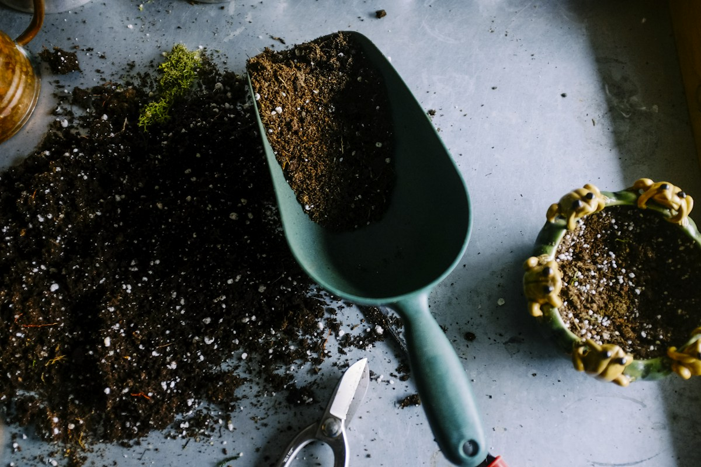
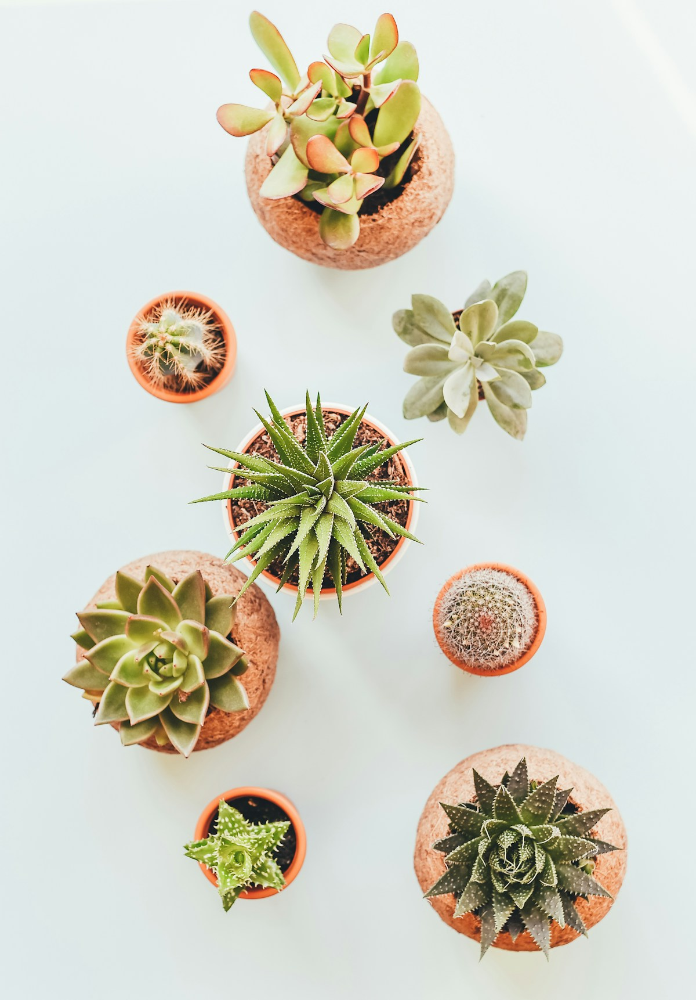

Улюблениця
ТРОПІЧНИЙ АКЦЕНТ
Монстера делікатесна
Розсіяне світло · помірний полив
690 ₴
КІМНАТНІ РОСЛИНИ · ГОРЩИКИ · НАТХНЕННЯ
Знайди свого зеленого сусіда — для підвіконня, робочого столу чи улюбленого куточка вдома.
Обрати рослину ↗Вигаданий магазин. Справжня любов до зелені.

ЗЕЛЕНІ ЗНАЙОМСТВА
ТРОПІЧНИЙ АКЦЕНТ
Розсіяне світло · помірний полив

ДЛЯ СВІТЛОГО КУТОЧКА
Яскраве розсіяне світло · без протягів
МАЛЕНЬКИЙ КОМПАНЬЙОН
Сонячне місце · нечастий полив

ТВІЙ ЗЕЛЕНИЙ СТАРТ
Три рослини для затишної оселі
Усі товари та ціни наведені для демонстрації. Реальні замовлення не приймаються.
НАША ІСТОРІЯ
«Листя» — вигаданий магазин для тих, хто мріє про власний зелений куточок. Ми придумали його, щоб показати: навіть маленька рослина може стати початком великої любові до природи.
Тут зібрані ідеї для дому, нескладні поради та рослини на різний смак. Цей сайт створено як домашнє завдання з програмування.
ЗЕЛЕНА ПАМ’ЯТКА
Підбирай освітлення під конкретну рослину. Для багатьох видів підходить яскраве розсіяне світло.
Перш ніж поливати, перевір вологість ґрунту. Потреба у воді залежить від виду, сезону й умов.
Прибирай пил, оглядай листочки та обирай горщик з дренажними отворами для відтоку зайвої води.